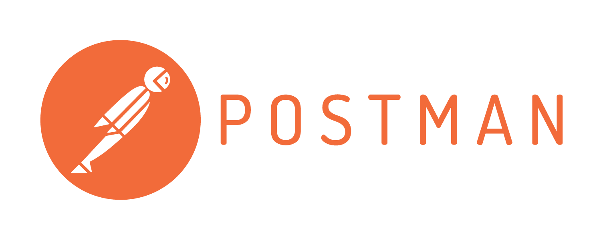

DAY13-前端測試API的利器-postman
DAY13-前端測試API的利器-postman
什麼是postman

postman是一個測試API的工具。前端不論要取得或是傳送資料是，都必須頻繁地不斷透過API作為更通的橋樑。而將API串起來讓網頁可以順利運行是前端很重要的工作之一。
安裝postman
postman有兩種方法可以安裝，一種是安裝chrome的擴充套件；一種是安裝桌面版。根據使用經驗，擴充套件的版本有時候會鈍鈍的，桌面板使用比較順暢，推薦下載安裝桌面版本
安裝過程很和一般安裝程式的流程一樣，一直按下一步就安裝完了。
註冊postman帳號(非必要)
postman不需要註冊也可以直接使用，但是如果註冊，它會將資料同步到雲端，使用不同電腦，只要登入帳號後，就會將資料同步回來，非常推薦!
使用postman
Collection
Collection是一堆API request的集合，可以看作是存放一堆API request的資料夾。
通常會依專案來區分Collection
建立collection
點New Collection按鈕建立新的collection，輸入名稱和敘述

建立好後，可以看到collection是空白的。來建立第一個request，點擊Add requests，一樣輸入名稱和敘述

Request建立與使用

操作區域主要可以分為三區
- 網址方法區
- 參數區
- 回應區
網址方法區
輸入API的位置，和API請求的方法。同一個API位置，會因為不同的請求方法而有不同的回應。
常見的請求方法
- get:從API取得資料
- put:傳送資料去更新資料庫的資料
- post:傳送資料去建立資料庫的資料
以上這些方法的解釋只是一般的使用習慣，並無硬性規定，實務上也有人使用post方法去更新資料或是取得資料，端看API如何設計
參數區
這裡是加上API 使用的附加資訊，例如查詢參數、授權資料、傳送的資料等等都可以在這邊填寫
回應區
資料填寫好之後，按下Send按鈕，就可以看到API的回應結果。
除了回應結果，還可以看見回應的狀態碼、回應時間多久等資訊
以下示範幾種方法的操作
get
純粹取得資料，輸入API位置之後，直接按Send，看見API回應

get with parameters
加上查詢參數，像是 ?xxx=yyy 等方法，在Params的頁籤加上查詢參數
可以看到API的回應結果，有收到查詢的參數age等於24

post
post方法通常會加上傳送資料，傳送資料通常包在body資訊裡面。因此切換到body頁籤，可以看到不同的傳送資料的方法。依API的設計有不同的方法。目前大部分json格式都選擇 x-www-form-urlencoded 格式，填好資料傳送出去，可以從回應結果看到正確傳送資料到後端

常見的http狀態碼
以下附上常見的http狀態碼
- 200 : 成功
- 201 : 建立成功，常用在post和put方法
- 204 : 無內容
- 400 : 處理的內容錯誤，可能傳送的東西不符合格式的要求
- 401 : 未授權，API需要授權，需要戴上授權資訊
- 404 : 找不到，指定的API網址不存在
- 409 : 衝突，常發生在post和put方法，裡面的資料和資料庫有衝突
- 500 : 伺服器內部錯誤，雖然大部分可能是後端沒有處理好，但是也有可能是前端送了錯誤的資料，讓伺服器無法處理
完整的http狀態碼，請詳見MDN
參考資料
https://tw.alphacamp.co/blog/postman-api-tutorial-for-beginners